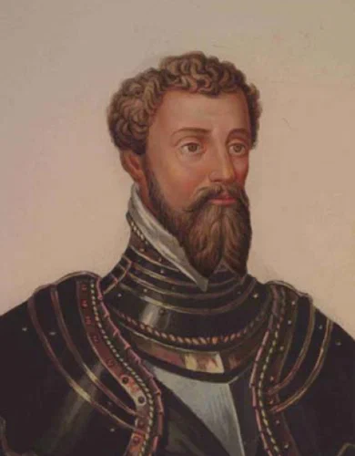
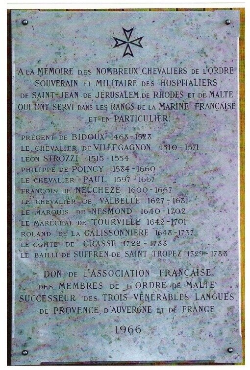
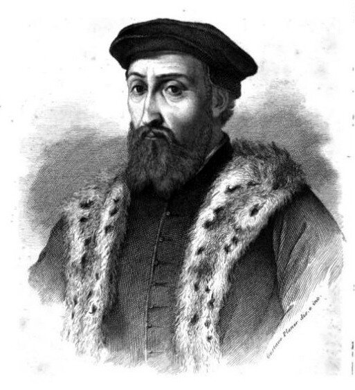

В предыдущем рассказе мы обещали дать жизнеописание первого официально назначенного Генерала галер Мальтийского ордена Леона Строцци.

Гравюра Moutier из книги Famiglie celebri in Italia - Strozzi. Mailand,1839
Если быть более точным, то Леон Строцци был также и генералом галер Франции. Во французской Военно-морской академии в Бресте (Ecole Navale) висит мраморная доска с именами рыцарей Мальтийского ордена, которые занимали высшие посты в морском командовании Франции.

Текст на ней гласит:
«В память о всех рыцарях суверенного военного ордена госпитальеров св. Иоанна Иерусалимского, Родосского и Мальтийского, которые служили в рядах французского флота, и в частности
Прежан де Биду 1468-1528
Шевалье де Вильганон 1510-1571
Леон Строцци 1515 -1554
Филипп де Пуанси 1584-1660
Шевалье Поль 1597-1667
Франсуа де Нашез 1600-1667
Шевалье де Вальбель 1627-1681
Маркиз де Несмон 1640-1702
Маршал де Турвиль 1642-1701
Ролан де ля Галиссоньер 1648-1737
Граф де Грасс 1722-1788
Байли де Сюффран де Сен-Тропе 1729-1788»
Доска, как ясно из надписи внизу, установлена французской ассоциацией членов Мальтийского ордена, неследницы трех лангов – Прованса, Оверни и Франции, в 1966 году.
О Прежане де Биду, возглавляющем список, мы уже рассказывали. Сегодня начнем рассказ о Леоне Строцци.
Леон (по-итальянски Леоне) Строцци, сын знаменитого флорентинца Филиппо (Филиппе) Строцци, родился во Флоренции в 1515 году. Отец Леона был одним из основных деятелей и руководителей Флорентийской республики.

Филиппо Джамбатиста Строцци (Strozzi, 1488-1538) вел продолжительную борьбу против тирании семейства Медичи. В 1527 г. он принял участие во флорентийской революции против них, но в 1530 г., по настоянию папы Климента VII, помог Алессандро Медичи захватить власть и стать герцогом Флорентийским. Осознав, что этим он способствовал усилению тиран
Филиппо Стродзи
В отчизне Данта, древней, знаменитой,
В тот самый век, когда монах немецкий
Противу папы смело восставал,
Жил честный гражданин, Филиппо Стродзи.
Он был богат и знатен; торговал
Со всей Европой, заседал в судах
И вел за дело правое войну
С соседями: не раз ему вверяла
Свою судьбу тосканская столица.
И был он справедлив, и прост, и кроток;
Не соблазнял, но покорял умом
Противников... и зависти враждебной,
Тревожной злобы, низкого коварства
Не ведал прямодушный человек.
В нем древний римлянин воскрес; во всех
Его делах, и в поступи, во взорах,
В обдуманной медлительности речи
Дышало благородное сознанье -
Сознанье государственного мужа.
Не позволял он называть себя
Почетными названьями; льстецам
Он говорил: "Меня зовут Филиппом,
Я сын купца". Любовью беспредельной
Любил он родину, любил свободу,
И, верный строгой мудрости Зенона,
Ни смерти не боялся, ни безумно
Не радовался жизни, но бесчестно,
Но в рабстве жить не мог и не хотел.
И вот, когда семейство Медичисов,
Людей честолюбивых, пышных, умных,
Уже давно любимое народом
(Со времени великого Козьмы),
Достигло власти, наконец; когда
Сам император - Пятый Карл - родную
Дочь отдал Александру Медичису,
И сильный силой царственного тестя
Законы нагло начал попирать
Безумный Александр - восстал Филипп
И с жалобой не дерзкой, но достойной
Свободного народа, к венценосцу
Прибег. Но Карл остался непреклонным -
Цари друг другу все сродни. Тогда
Филиппе Стродзи, видя, что народ
Молчит и терпит, и страшась привычки
Разврата рабства - худшего разврата, -
Рукою Лоренцина погубил
Надменного владыку. Но минула
Та славная, великая пора,
Когда цвели свободные народы
В Италии, божественной стране,
И не пугались мысли безначалья,
Как дети малолетные... Напрасно
Освободил Филипп родную землю -
Явился новый, грозный притеснитель,
Другой Козьма. Филипп собрал дружину,
Друзей нашел и преданных и смелых,
Но полководцем не был он искусным...
Надеялся на правоту, на доблесть
И верил обещаньям и словам
Не как ребенок легковерный - нет!"
Как человек, быть может, слишком честный...
Его разбили, взяли в плен. Октавий
Разбил же Брута некогда. Как муху
Паук, медлительно терзал Филиппа
Лукавый победитель. Вот однажды
Сидел несчастный после тяжкой пытки
Перед окном и радовался втайне:
Он выдержал неслыханные муки
И никого не выдал палачам.
Сквозь черную решетку падал ровный
Широкий луч на бледное лицо,
На рубище кровавое, на раны
Страдальца. Слышался вдали беспечный,
Веселый говор праздного народа...
В окошко мухи быстро залетали,
И с вышины томительно далекой
Прозрачной, светлой веяло весной.
С усильем поднял голову Филиппо:
И вспомнил он любимую жену,
Детей-сироток - собственное детство...
И молодость, и первые желанья,
И первые полезные дела,
И всю простую, праведную жизнь
Свою тогда припомнил он. И вот
Куда попал он, наконец! Надеждам
Напрасным он не предавался... Казнь,
Мучительная казнь его ждала... Сомненье
Невыразимо горькое внезапно
Наполнило возвышенную душу
Филиппа; сердце в нем отяжелело,
И выступили слезы па глаза.
Молиться захотел он, возмутилось
В нем чувство справедливости... безмолвно
Израненные, скованные руки
Он поднял, показал их молча небу,
И без негодованья, с бесконечной
Печалью произнес он: где же правда?
И ропотом угрюмым отозвался
Филиппу низкий свод его тюрьмы...
Но долго бы пришлось еще терзаться
Филиппу, если б старый, честный сторож,
Достойный понимать его величье,
Однажды, после выхода судьи,
Не положил бы молча на пороге
Кинжала... Понял сторожа Филипп, -
И так же молча, медленным поклоном
Благодарил заботливого друга.
Но прежде чем себе нанес он рану
Смертельную, на каменной стене
Кинжалом стих латинской эпопеи
Он начертал: "Когда-нибудь восстанет
Из праха нашего желанный мститель!"
Последняя, напрасная надежда!
Филиппов сын погиб в земле чужой -
На службе короля чужого; внук
Филиппа заживо был кинут в море,
И род его пресекся, Медичисы
Владели долго родиной Филиппа,
Охотно покорялись им потомки
Филипповых сограждан и друзей...
О наша матерь - вечная земля!
Ты поглощаешь так же равнодушно
И пот, и слезы, кровь детей твоих,
Пролитую за праведное дело,
Как утренние капельки росы!
И ты, живой, подвижный, звучный воздух,
Ты так же переносишь равнодушно
Последний вздох, последние молитвы,
Последние предсмертные проклятья,
Как песенку пастушки молодой...
А ты, неблагодарная толпа,
Ты забываешь так же беззаботно
Людей, погибших честно за тебя,
Как позабудут и твои потомки
Твои немые, тяжкие страданья,
Твои нетерпеливые волненья
И все победы громкие твои!
Блажен же тот, кому судьба смеется!
Блажен, кто счастлив, силен и не прав!!!
Дверь отворилась... и вошел Козьма...
В качестве небольшого примечания отметим, что после провозглашения Козимо Медичи герцогом Флоренции (в 1537 г.) Филиппо С
Старший сын Филиппо - Пьеро Строцци (ок. 1510—1558) - маршал Франции, который служил французскому королю Франциску I и тщетно пытался возвратиться во Флоренцию, был убит выстрелом из аркебузы при осаде Тионвиля в 1558 г.
Внук Ф.Строцци - генерал Филиппо Строцци (1541-1582), находившийся на французской службе, в 1582 г. во главе флота отправился на помощь дон Антонио из Крату, претендовавшему на престол короля Португалии, и в морской битве у Азорских островов был пленен исп
Ну а о Леоне Строцци мы подробно поговорим в следующий раз.